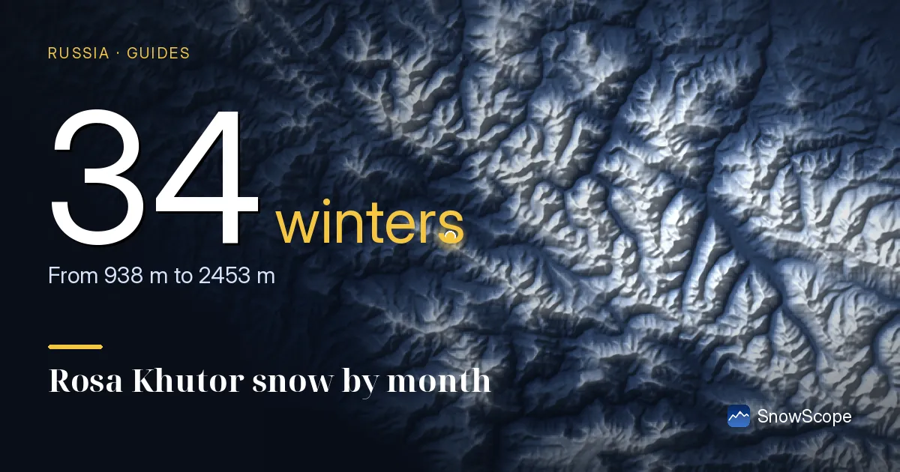
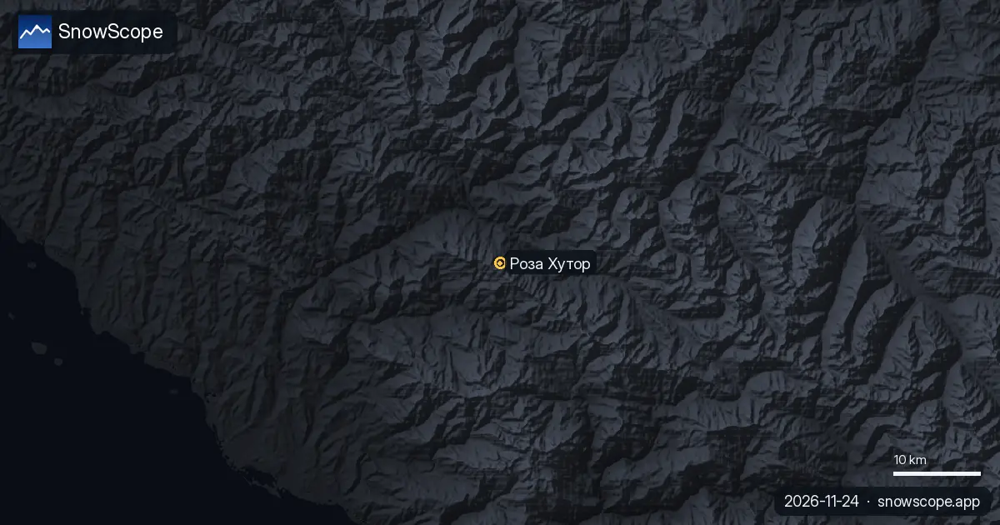
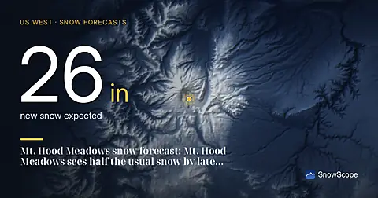

Rosa Khutor snow by month: 34 winters from 938 m to 2453 m
Rosa Khutor, above Krasnaya Polyana near Sochi, is the largest mapped ski area in Russia: 90 km of runs and 26 lifts, from 938 m to 2453 m. It is also a mountain with two climates, a mild green valley and a high, snowy ridge. Our snow history of 34 past winters (1991-92 to 2024-25) shows how big that difference is, and when the whole mountain is white.
See the live snow forecast for Роза Хутор in the SnowScope appSnow depth, powder alerts and the 3D map, free.

1515 m of difference
At the base (938 m) the usual winter peak is 78 cm, between 55 cm in the poorest winter and 107 cm in the richest. At mid-mountain (1695 m) it is 187 cm, and at the top (2453 m) 261 cm, with a range from 182 cm to 356 cm.
The season length follows the same ladder: snow lies on about 161 days a year at the base, 176 days at mid-mountain and 180 days at the top. On the same day, a skier can find deep winter snow on the ridge and soft, thin spring snow by the river.
December is a gamble
The first snow usually reaches the top around 1 November, mid-mountain around 7 November and the base only around 19 November. But the first snow is not yet the season.
In December the usual depth at the top is 59 cm, and the spread is huge: 11 cm or less in one December in ten, 150 cm or more in another. At mid-mountain the usual December depth is 42 cm (8 cm to 108 cm); at the base it is 18 cm. A Christmas trip can be excellent or very thin, and the record gives no way to know which a month ahead.
January to March: the sure months
January changes the picture. The usual depth at the top rises to 139 cm, then 202 cm in February and 205 cm in March. Mid-mountain has 99 cm in January, 144 cm in February and 147 cm in March. Even the base reaches 61 cm in February and 62 cm in March.
The best week of the year is week 8, in late February: in every one of the 34 winters the top had at least 50 cm then, with a usual depth of 217 cm. Counting the weeks with 50 cm in 9 winters out of 10, the top has 14 and mid-mountain 11. The base has none, so the lowest runs depend more on the winter you get.
Spring skiing
April is still a good month high up: the usual depth is 131 cm at the top and 94 cm at mid-mountain, but only 39 cm at the base, which melts fast. Snow usually lasts until around 14 May at the top and 8 May at the base.
For spring skiing, plan to ski the upper half in the morning, when the snow is firm, and come down by lift if the lowest runs are wet.
A clear downward trend
We compared the first 15 winters of the record with the last 15. The usual peak at the top fell from 289 cm to 246 cm, at mid-mountain from 207 cm to 176 cm and at the base from 87 cm to 74 cm. The season is shorter too: from 189 to 173 snow days at the top, from 187 to 165 at mid-mountain and from 175 to 153 at the base.
The last winter of the record, 2024-25, peaked at 262 cm at the top, close to the long-term usual. Rosa Khutor remains one of the snowiest big ski areas in Europe at height; the loss is in the length of the season and at the bottom of the mountain.
How to plan a trip
For the best odds, go from late January to mid-March and stay on the upper half. In December, expect a choice of runs that depends on the first big storms, and keep the dates flexible if you can. The neighbouring Gazprom and Krasnaya Polyana ski areas share the same valley; their history is not part of this piece.
Tips for skiers
- Choose February or early March for the deepest and most reliable snow on the whole mountain.
- In December and April, ski the upper half: the top usually holds far more snow than the base.
- Keep Christmas dates flexible; the December snow varies hugely from one winter to the next.
- Look at the snow map a few days before you go; early-season depth changes fast after each storm.
- Off-piste, check the official avalanche information first and never ride alone.
About these numbers
Snow numbers: SnowScope snow history, 34 past winters (1991-92 to 2024-25) at three heights of the resort (an estimate for an area, not resort reports). Lift and run facts: mapped lifts and runs.
Official avalanche bulletins: EAWS – European Avalanche Warning Services
Cite this report
For research, teaching or the press: the numbers and charts are free to reuse under CC BY 4.0 with this citation.
SnowScope (2026), Rosa Khutor snow by month: 34 winters from 938 m to 2453 m, https://snowscope.app/blog/en/2026/11/rosa-khutor-snow-by-month-krasnaya-polyana-34-winters.html, accessed 2026-11-24
SnowScope (Atlas Labs). (2026, November 24). Rosa Khutor snow by month: 34 winters from 938 m to 2453 m. SnowScope snow reports. https://snowscope.app/blog/en/2026/11/rosa-khutor-snow-by-month-krasnaya-polyana-34-winters.html
BibTeX
@misc{snowscope2026rosakhutorsnowbymonthkra,
author = {{SnowScope (Atlas Labs)}},
title = {Rosa Khutor snow by month: 34 winters from 938 m to 2453 m},
year = {2026},
month = nov,
howpublished = {\url{https://snowscope.app/blog/en/2026/11/rosa-khutor-snow-by-month-krasnaya-polyana-34-winters.html}},
note = {Published 2026-11-24 10:03 UTC; accessed 2026-11-24}
}· CC BY 4.0 · Methods, data and tools →
Роза Хутор: snow and temperature by height, this winter vs last (tools) →
Follow Роза Хутор
Free: a message when fresh snow is coming, and the forecast every morning.
More snow reports

Mt Baker sits at 28 cm on upper slopes, right where November typically sees snow at this height. Fresh powder is arriving this week, especially Thursday.

Mt. Hood Meadows has 51 cm on upper slopes, well below the 73 cm average. Up to 66 cm new snow forecast by November 27 at Crystal Mountain.

December snow odds from 46 winters and checked day prices: Ski Cooper $49, Les 3 Vallées €75.70, Oukaïmeden no official tariff. Where a cheap December ski day works.